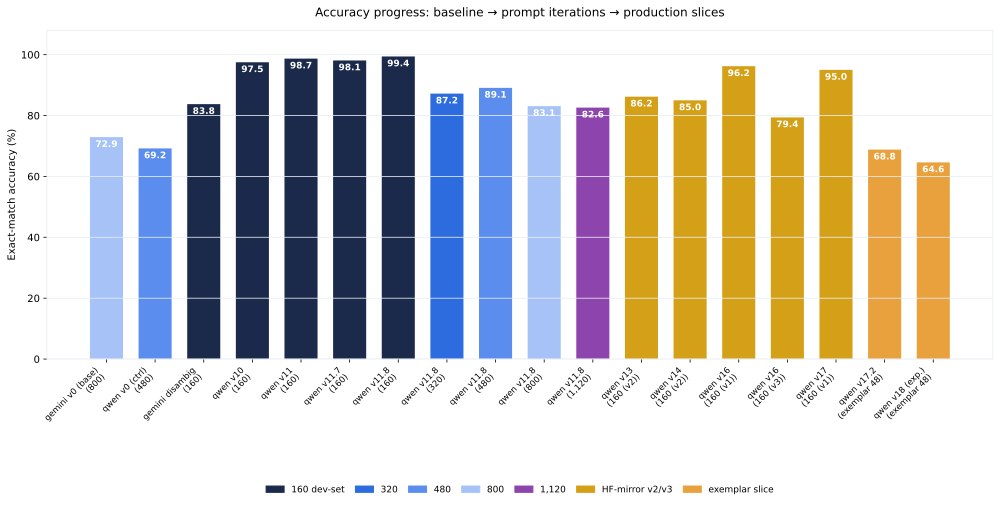

RVL-CDIP Document Classifier
A prompt-engineering lab over the RVL-CDIP benchmark — 16-class document intelligence via OpenRouter vision models and Braintrust evals
RVL-CDIP, document classification, prompt engineering, OpenRouter, Braintrust, vision language models, exact-match evaluation, Monte Carlo, ensemble voting, cost analysis
A prompt-engineering lab over the RVL-CDIP benchmark. Vision language models on OpenRouter classify scanned documents into 16 types — with 27 versioned prompt iterations, exact-match evals on Braintrust, cost tracking per image, and a 4,641-row Monte Carlo study of robustness, ensembling, routing, and early-stop behavior.
16 document classes 27 prompt versions v17.2 default prompt 99.4% best slice accuracy OpenRouter + Braintrust
1 At a glance
The project turns the classic RVL-CDIP document-classification benchmark into a controlled prompt-engineering study. Each scanned document is rendered to a 1024×1024 grayscale PNG, sent to an OpenRouter vision model with a versioned classification prompt, and scored on exact-match accuracy against the 16-class vocabulary. Every run lands in Braintrust as a reproducible experiment, and results flow into this site as charts generated from the committed data.
RVL-CDIP scan ──► 1024×1024 grayscale PNG ──► OpenRouter vision model ──► 16-class prediction
▲ │ │
versioned prompt reasoning trace exact-match score
(v0 → v17.2) + runner-up + cost → BraintrustModels evaluated include qwen3.7-flash, qwen3.5-35b-a3b, gemini-2.5-flash(-lite), and kimi-k3. The default prompt, v17.2, ships a 14-check verification cascade and a self-critical reasoning scratchpad.
2 The accuracy arc
From the 72.9% Gemini baseline to v11.8’s 99.4% on the 160-image slice — and the honest fall-off on larger, harder slices (87.2% @ 320, 83.1% @ 800, 82.6% @ 1,120).

| Dataset slice | Images | Best version | Accuracy |
|---|---|---|---|
| fixed_size_sampled (v1) | 160 | v11.8 | 99.4% |
| fixed_size_sampled (v3/v4) | 160 | v16 | 96.2% / 79.4% |
| fixed_size_sampled_v2 | 160 | v13 | 86.2% |
| fixed_size_sampled_320 | 320 | v11.8 | 87.2% |
| fixed_size_sampled_480 | 480 | v11.8 | 89.1% |
| rvl_cdip_800 | 800 | v11.8 | 83.1% |
| 1600_balanced_1120 | 1,120 | v11.8 | 82.6% |
Explore the headline results for per-class breakdowns and the failure analysis behind these numbers.
3 Project layout
This site is generated by two scripts that read the committed documentation and reports — no API keys needed:
scripts/site/build_site_charts.py— parses committed markdown tables and renders every chart on this site as SVGscripts/site/build_site.py— rewrites the source docs into Quarto pages, repairs log corruption, and builds the aggregate + appendix pages
Everything upstream (evals, dataset slicing, report generation) lives in the GitHub repository.